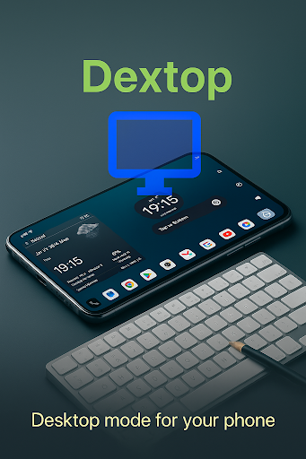

1. The Pocket Computer Revolution
Consider the hardware inside your pocket right now: an 8-core Qualcomm Snapdragon, MediaTek Dimensity, or Google Tensor chip with 8GB to 16GB of LPDDR5 RAM and blazing-fast UFS 4.0 storage.
By all objective computational metrics, your Android smartphone is more capable than the ultrabooks and office PCs used in corporate workstations five years ago. Yet for 99% of people, that immense computing muscle remains bottlenecked by a 6-inch vertical screen designed for one-thumb scrolling through social feeds.
What if you could plug your phone into a monitor, pair a Bluetooth mouse and keyboard, and do serious writing, spreadsheet editing, software development, or research—leaving your heavy laptop charger at home?
2. Why Default Android Fails at Desktop Multitasking
If you connect an ordinary Android phone to a computer monitor or TV via USB-C or Chromecast, what happens?
- Black Pillar Bars: The screen mirrors your narrow vertical (9:16) phone interface onto a widescreen (16:9) monitor, wasting 60% of your display space with huge black borders on either side.
- Stretched, Awkward Icons: If you rotate the phone horizontally, standard launchers (like Pixel Launcher or Nova Launcher) stretch portrait widgets awkwardly across the display.
- No Desktop Paradigm: Standard Android lacks a desktop-class taskbar, independent landscape shortcuts, or an ergonomic app switcher tailored for mouse clicks rather than finger swipes.
3. The Samsung DeX Problem: Locked Ecosystems
Samsung popularized phone-as-a-PC computing with Samsung DeX. While DeX is impressive, it has one fatal flaw: it is strictly locked to expensive Samsung Galaxy S, Note, and Tab devices.
If you own a Google Pixel 9/8/7, a Xiaomi, a Motorola, a OnePlus, a Nothing Phone, or an affordable budget device, you are completely locked out of DeX. Motorola offers "Ready For," but again, only on select high-tier Moto handsets.
Android users deserve a universal, lightweight solution that works regardless of phone brand.
4. The Solution: Dextop & Dextop Core
That is where Dextop comes in. With over 300,000 installs worldwide, Dextop is the premier desktop environment launcher for Android.

Dextop: Desktop Environment for Android
Native landscape launcher, persistent productivity taskbar, separate desktop shortcuts, and seamless multi-window navigation. Over 300k+ downloads.
Dextop fundamentally re-imagines how Android behaves in landscape orientation:
- True 16:9 / 16:10 Landscape UI: Built from the ground up for horizontal displays, filling your external monitor, tablet, or foldable screen edge-to-edge.
- Independent Desktop Shortcuts: Your portrait home screen remains clean. In Dextop, you can place dedicated project folders, work apps, and system shortcuts that only appear in desktop mode.
- Desktop-Grade Taskbar: Launch apps, switch between open tasks, access quick settings, and control media without touching your phone.
- Zero Root or Complex Hacks: Runs as a standard, high-performance Android launcher without requiring unlocked bootloaders or voiding warranties.
5. The Hardware Setup: From Budget to Executive Workstation
Turning your Android device into a workstation is surprisingly flexible. Here are three proven setups:
The Minimalist Road-Warrior Setup ($0 extra hardware)
If you own an Android tablet (like a Lenovo Tab, Xiaomi Pad, or Galaxy Tab) or a foldable phone (like a Pixel Fold or Galaxy Z Fold), launch Dextop directly on the device! Add a compact folding Bluetooth keyboard and mouse for an instant coffee shop typing setup.
The Hotel / Travel Productivity Rig ($25 - $40)
Pack a compact USB-C to HDMI cable or adapter in your travel bag. Plug your phone into any hotel room television or Airbnb monitor, kick back with a wireless mouse and keyboard, and write emails or stream movies on the big screen without hauling a 5-pound laptop.
The Full Desktop Workstation ($50 - $100)
Use an inexpensive multi-port USB-C hub (with HDMI out, 2x USB-A ports, SD card reader, and USB-C Power Delivery charging). Connect your phone to your 27-inch 4K or 1080p desk monitor, mechanical keyboard, and precision mouse. Your phone charges at full speed while powering your entire workstation!

6. Choosing Your Edition: Dextop vs. Dextop Core
GiantTurtle Studio offers two distinct flavors to accommodate every hardware manufacturer:
| Feature | Dextop (Standard) | Dextop Core |
|---|---|---|
| Best For | Standard devices where you can set custom launchers | Devices with aggressive OEM restrictions (Xiaomi HyperOS, budget carrier devices) |
| Launcher Capability | Full standalone launcher | Companion landscape interface (no launcher replacement required) |
| Desktop Shortcuts | Custom grid & folders | Dedicated landscape launcher |
| Download Link | Google Play Store | Google Play Store (Core) |
If your phone manufacturer blocks third-party launchers when using full-screen navigation gestures, Dextop Core was engineered specifically for you! It bypasses launcher replacement restrictions completely.
7. 5 Real-World Productive Workflows
What can you actually do with an Android desktop workstation? Here are five practical use cases:
- Software Development & Cloud Workstations: Connect to remote servers via Termux, SSH, or run VS Code through code-server in Chromium. You get full Linux command-line capabilities in your pocket.
- Distraction-Free Writing: Pair Google Docs, Notion, or Obsidian with a physical mechanical keyboard for an ultra-focused, long-battery-life typing experience.
- Car Dashboard & Head-Unit Systems: Mount your Android tablet or phone horizontally on your vehicle dashboard. Dextop provides high-visibility landscape buttons for navigation, Spotify, and podcasts.
- Low-Cost Student Workstation: A student with an Android phone and a $30 thrift-store HDMI monitor can type essays, attend Zoom calls, and conduct academic research without the expense of a new PC.
- Digital Signage & Kiosks: Mount budget Android devices horizontally in storefronts, gyms, or reception desks with custom shortcuts locked into place.
8. Feature Comparison: DeX vs. Stock Android vs. Dextop
| Capability | Samsung DeX | Stock Android Mirroring | Dextop Solution |
|---|---|---|---|
| Compatibility | High-end Galaxy only | All devices | Any Android device |
| Landscape Optimization | Yes | Pillarboxed / Stretched | Native 16:9 desktop UI |
| Independent Shortcuts | Yes | No (clutters portrait screen) | Independent desktop space |
| Tablet & Foldable Support | Only Galaxy Tabs | Clunky | Universal tablet support |
| Lightweight & Fast | Heavy system service | Basic | Blazing fast (< 10MB) |
9. Frequently Asked Questions
Samsung DeX is proprietary and restricted to premium Galaxy phones. Dextop provides a brand-agnostic alternative that works on Google Pixel, Xiaomi, Motorola, OnePlus, Nothing Phone, and all other Android devices.
No. Dextop works standalone directly on your phone, tablet, or foldable screen. If you do want to use an external monitor, an inexpensive $15-$25 USB-C to HDMI adapter is all you need.
No. Dextop installs like any standard application from the Google Play Store. It does not require root privileges, unlocking the bootloader, or executing complex ADB scripts.
No. Dextop operates with independent landscape desktop shortcuts. Your normal portrait home screen icons, wallpapers, and widgets remain completely unaffected.
Unlock Your Phone's Full Computational Power
Stop treating your powerful smartphone like a tiny pocket screen. Connect to a bigger display or flip your phone into landscape and experience true mobile desktop productivity with Dextop.
Get Dextop on Google Play
Join over 300,000 users turning their Android phones into versatile desktop workstations today.